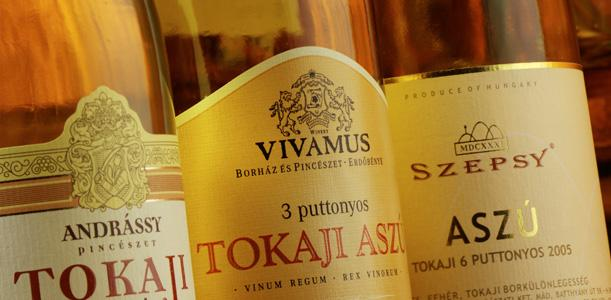
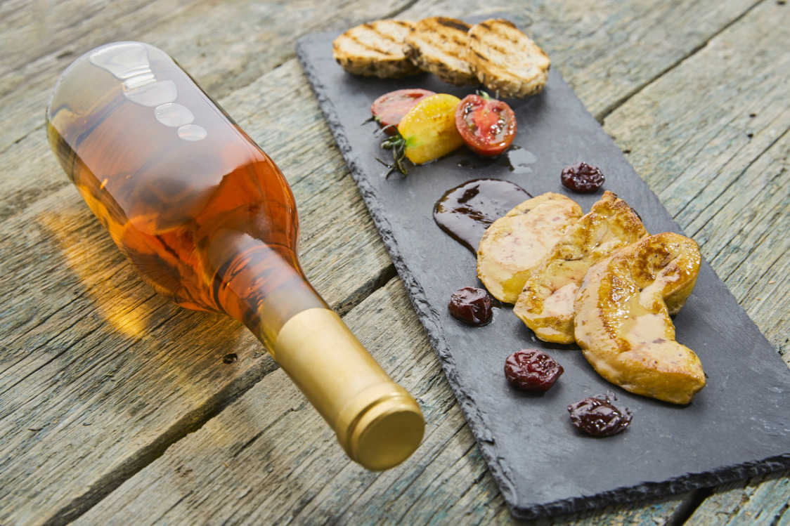

Az aszús címkéken megjelenő „misztikus” szám, az úgynevezett puttonyszám, az aszúbor édességére,
koncentrációjára utal. A puttonyszám az aszúkészítés hagyományos eljárásából ered, mely szerint egy
gönci hordónyi (136 l) borhoz vagy musthoz annyi puttony (kb. 25 kg) mennyiségű aszúszemet adnak, ahány
puttonyos bort szeretnének belőle készíteni.
A Tokaji aszú puttonyszám szerint lehet:
Puttonyszám
Cukortartalom
3 puttonyos
minimum 60 gramm/liter
4 puttonyos
minimum 90 gramm/liter
5 puttonyos
minimum 120 gramm/liter
6 puttonyos
minimum 150 gramm/liter
aszúesszencia
minimum 180 gramm/liter
Egy új szabályozás alapján hamarosan eltűnik a 3 puttonyos és 4 puttonyos aszú a boltok polcairól.
2014 januárjától ugyanis csak azok a borok nevezhetők tokaji aszúnak, amik természetes cukortartalma
minimum 120 gramm/liter. Azaz ettől kezdve már csak az 5 puttonyos és az 6 puttonyos aszút nevezhetjük
tokaji aszúnak.
Sőt, hosszabb távon valószínűleg már csak a tokaji aszú név marad, meghatározott termékleírási keretek
között az 5 és 6 puttonyos különbségtétel is eltűnhet. Mindez a borok magas minőséget hivatott
támogatni, ami az aszú prémium jellegét erősíti.

Mikor és mihez igyuk?
Bármikor bátran ki lehet nyitni egy palack aszút. Ez az a bor, amit nem kell felbontás után azonnal
elfogyasztani, mert nagyon stabil, megbízható ital. Egy-két hétig probléma nélkül eláll a hűtőben, így
akár minden este élvezhetjük, cseppenként ízlelgethetjük
10-12 Celsius-fokon érdemes inni. Mire azt a kis mennyiséget kitöltjük a hűtőből kivett palackból a
szobahőmérsékletű pohárba, éppen megfelelő lesz.
Az aszú kiváló kísérője a libamájnak, a kéksajtnak, és persze a desszerteknek, főleg a csokoládéval,
mogyoróval, dióval, lekvárral, gyümölccsel készült édességeknek. A karácsonyi gyümölcskenyérhez kínált
egyik fajta aszúval sem nyúlhatunk mellé. Aranyszabály, hogy a bornak legalább olyan édesnek kell
lennie, mint a desszertnek.
Ám egyáltalán nem kötelező az aszút valami mellé inni, lehet egyszerűen önmagában az a desszert.
Sokan nem szeretik az édes borokat, de az aszú valóban különleges kivétel: magas savtartalma kiválóan
kiegyensúlyozza az édes ízt, így hatása egyáltalán nem lesz émelyítő, szirupos.
És hogy mikor bontsuk? Akár advent második vasárnapján. Vagy most! Töltsük ki kedvenc poharunkba, üljünk
a kedvenc kuckónkba, és kóstoljuk, ízleljük, találjuk ki, hogy a palackban megmaradt kortyokhoz milyen
étel illene a legjobban szenteste.

Roston sült libamájszeletek